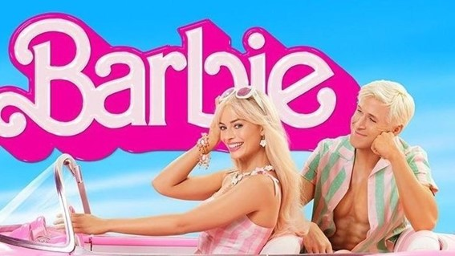

O live action de Barbie
A boneca que marcou a infância de tantas pessoas teve seu live action e está dividindo opiniões do público

Debochado, fashion, nostálgico e marcante. As palavras perfeitas para descrever um dos filmes mais esperados de 2023, se não o mais esperado desde que as primeiras notícias que a icônica boneca cor de rosa teria um filme, com muito rosa e referências o longa metragem Barbie não se trata apenas de bonecas, mas mostra como é “sair da caixa” e encarar uma realidade diferente dos contos de fadas.
Lançado nessa quinta-feira de julho (20) nos cinemas do Brasil inteiro, sob a direção de Greta Gerwig, diretora de Lady Bird: Hora de voar, com a atuação de Margot Robbie e Ryan Gosling que deram vida ao casal Barbie e Ken. O filme se passa na Barbielândia, um mundo cor de rosa onde a Barbie Estereotipada e suas amigas vivem aproveitando os dias como uma eterna festa, dançando e lutando pelo empoderamento feminino, entretanto Barbie entra em uma crise existencial e tudo o que era tão perfeito aos poucos vai mudando, ao mesmo tempo essas mudanças também refletem no seu corpo.
Mais que um conjunto de críticas o filme mostra em um tapa na cara como é dura a realidade de ser mulher e tentar seguir uma carreira estando inserida em uma sociedade machista e repressora, o estereótipo feminino e como é sufocante tantas cobranças e não poder transparecer seus sentimentos sem se taxada de louca ou dramática são o que mais marcaram o decorrer do filme. Além disso, Barbie mostra como o produto que deveria inspirar as garotas a seguirem seus sonhos independentemente dos obstáculos se tornou algo visto como tóxico por influenciar padrões inalcançáveis e ideologias irreais sobre o “corpo perfeito”.
Uma parte do público não se sentiu satisfeito com a forma como o Ken foi apresentado no filme. No desenho, ele é o namorado perfeito que sempre está disposto a fazer tudo para ver a Barbie contente, mesmo que isso o coloque em situações complicadas, no filme ele é dito apenas como “o namorado da Barbie”, insinuando que ele só vive caso a Barbie o note. Por causa disso, algumas pessoas levaram a figura da Barbie como alguém que só está usando o Ken como objeto, sem ligar para os sentimentos dele. Ken é retratado como qualquer retrato genérico dos cinemas, esse foi um dos muitos deboches ácidos que não agradou o público.
Barbie é um ótimo filme, Margot Robbie definitivamente nasceu para interpretar esse papel. Diferente do que estão dizendo não é nada parecido com “mais um mimimi feminista”, é um filme de mulheres para mulheres e, dentro de uma indústria que quase sempre é voltada para o público masculino, é comum que não agrade todo o público. Mas caso você queira ver um filme com as amigas para dar risadas, dizer “isso é verdade” e se emocionar, assista Barbie.
Data da Publicação: setembro de 2023